Task 1
To rasterize triangles in Task 1, we follow the basic rasterization procedure of sample one point at the center of each pixel.
First, we determine the bounding box of the triangle by determining the vertices as ranging from the minimum X value of the triangle vertices to the maximum X value, and likewise for the Y values.
We perform a point in triangle test for each point in this bounding box as the logical AND of 3 line tests corresponding to the 3 sides of the triangle. We perform an additional check to account for different winding orders.
Finally, if the point is in the triangle, we call the rasterize_point function.
This algorithm is no worse than checking each sample in the bounding box of the triangle since that is exactly what it does.
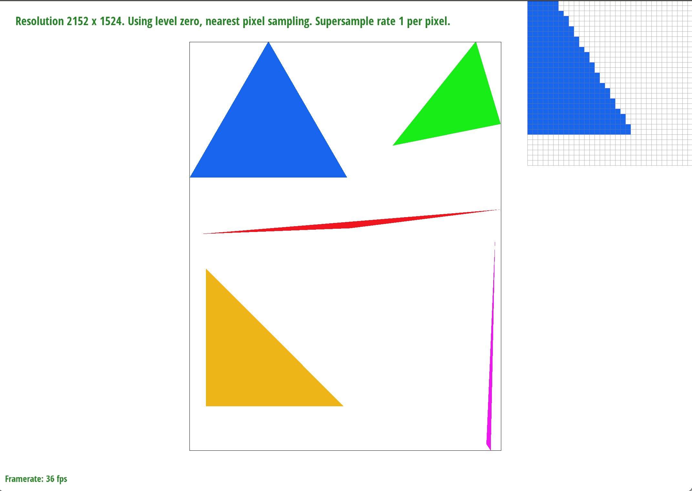
Task 2
The supersampling algorithm begins in a similar manner, by looping over each pixel in the bounding box of the triangle. However, within each pixel we then also loop over sample_rate additional points, spaced out evenly within the pixel square. In order to accomodate this, the sample buffer is now expanded to be a factor of sample_rate larger.
The point in triangle test is now modified to use the sample_rate samples within the pixel, rather than the single sample in the center of the pixel as before.
After performing the point in triangle test, we perform the appropriate array index logic to find the corresponding sample buffer index for the expanded samples and call fill_pixel . Within fill_pixel , we add a check to fill the supersamples surrounding points and lines to duplicate the pixel value at that point, so that we avoid "diluting" the pixel intensity of points and lines.
We also modify the resolve_to_framebuffer function to use the appropriate index logic to average the supersamples and write the resulting color to the framebuffer.
We can see in the below comparison that increasing the sample rate causes the edges of the objects to more closely approximate a straight line, rather than a jaggy one. This is because supersampling around the edge "fades" out the jaggies as the supersamples are averaged together.
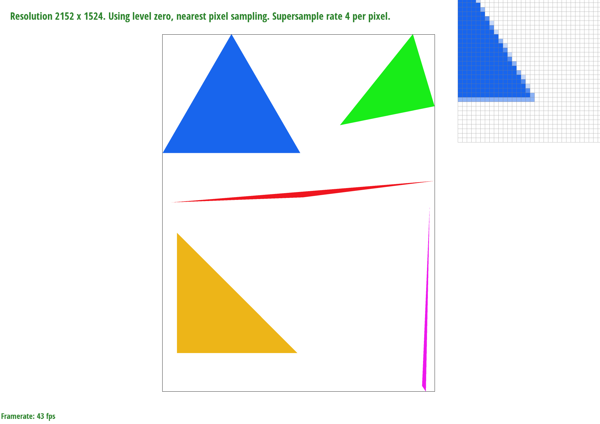 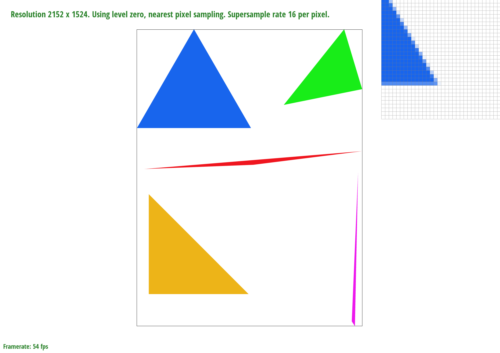
Task 3
Below is a modified version of cubeman where he is raising the left leg and left arm 45 degrees in the air.
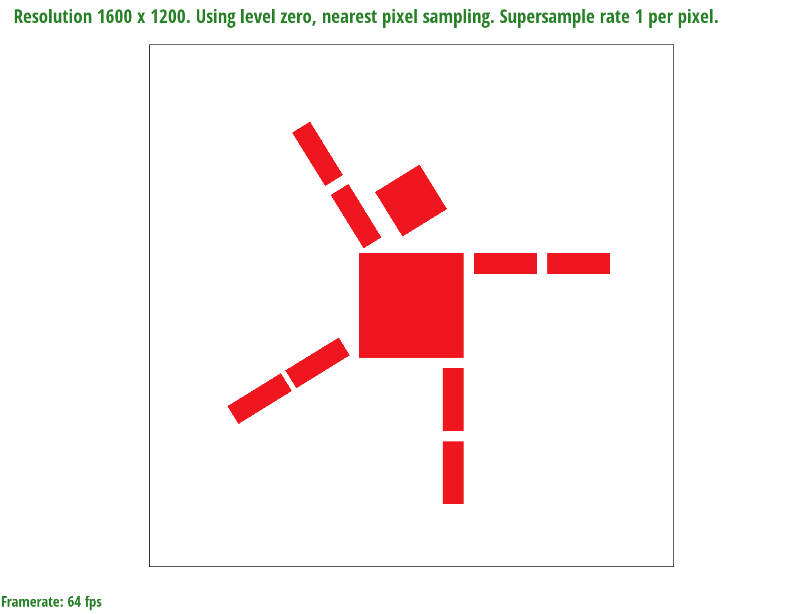
Task 4
Barycentric coordinates are a coordinate system for triangles that allow you to express a point within the triangle as a linar combination of the vertices of the triangle. Below is an image in which the color of the triangle vertices are specified and the inside of the triangle is interpolated using barycentric coordinates.
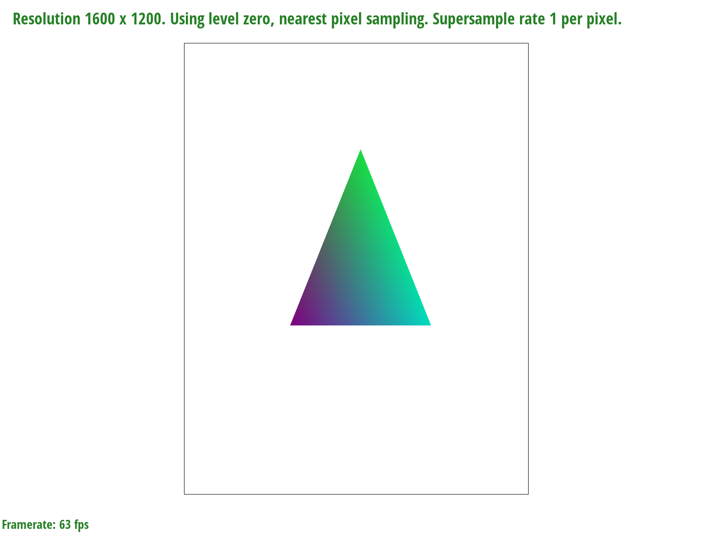
Below is an image of svg/basic/test7.svg:
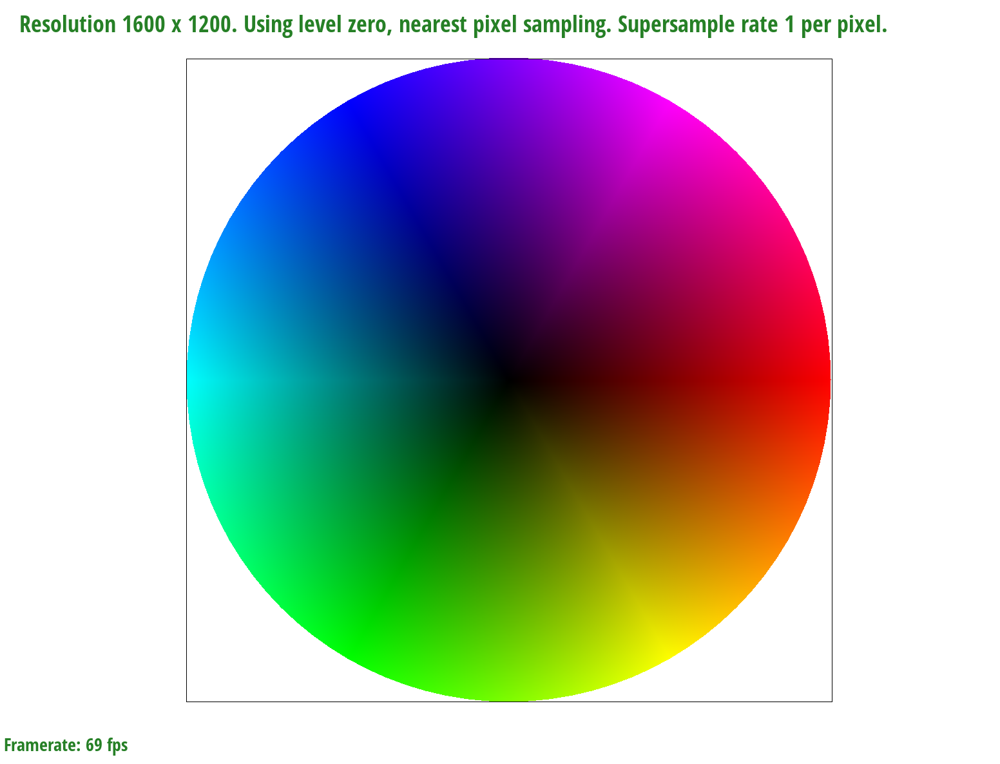
Task 5
Pixel sampling using a full-resolution texture map involves mapping each sample point within each triangle to its corresponding uv sample point in the tecture map. Given the 3 xy coordinates for the triangle vertices and the corresponding uv coordinates, we first use barycentric coordinates to interpolate the uv coordinates for the sample/supersample in the texture map.
If we use nearest pixel sampling, the color used for the pixel is that of the nearest point in the texture map. This can be found by taking the 4 nearest sample locations in the texture map, picking the closest one, and using that color as the color of the xy sample. If we use bilinear pixel sampling, the color used is effectively a weighted average of the colors of the surrounding 4 texture samples, using the bilinear interpolation method.
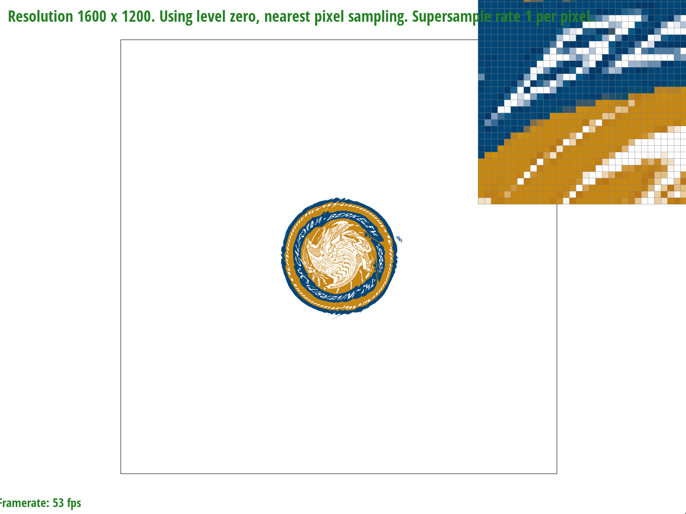 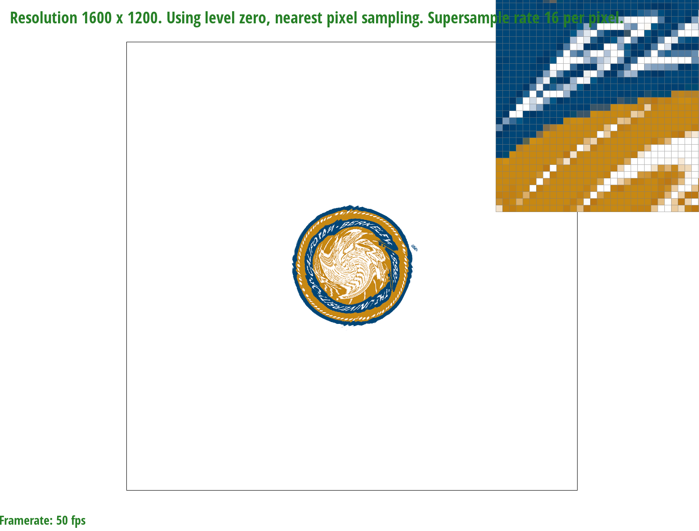 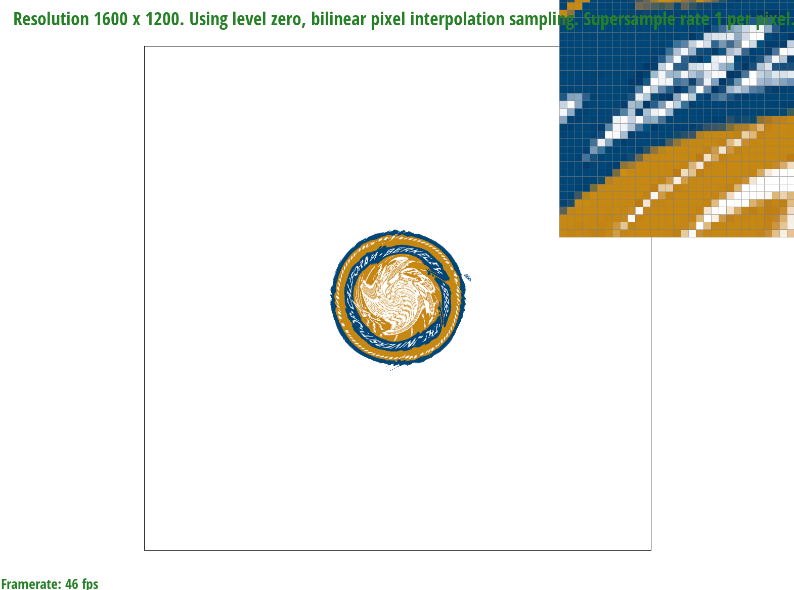 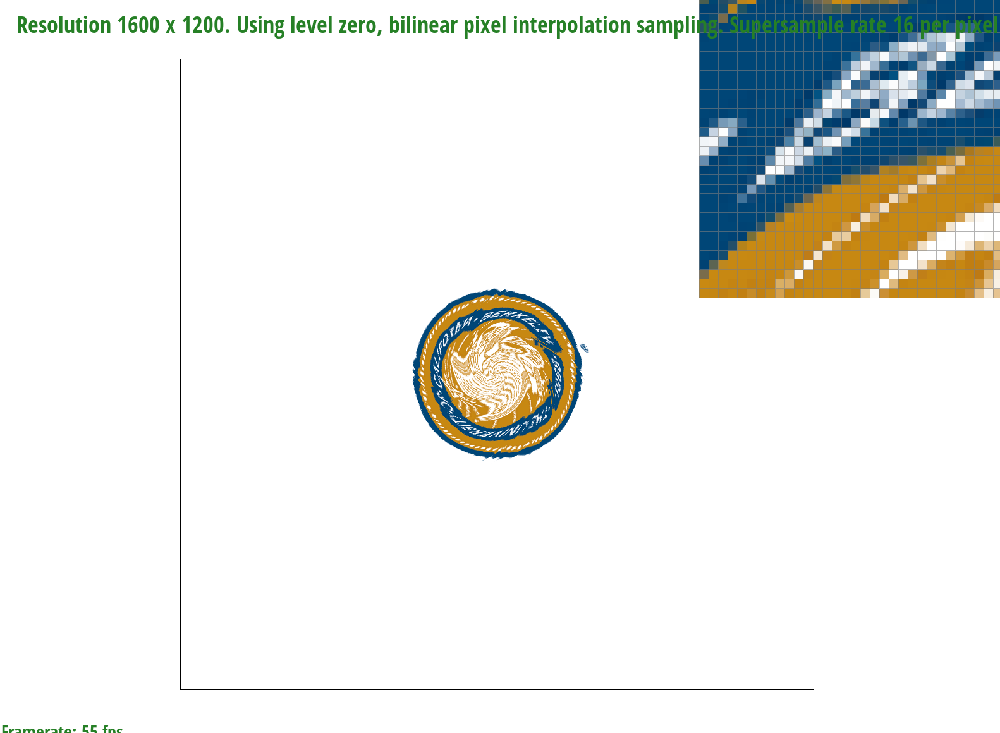
Based on the images above (nearest-1 sample, nearest-16 samples, bilinear-1 sample, bilinear-16 samples), we can see that the bilinear interpolation offers a smoother transition between image objects. Bilinear interpolation in general offers an advantage over nearest-neighbor sampling where the data is continuous, rather than inherently discrete.
Task 6
In level sampling, in addition to having a full resolution texture, we also have a series of smaller resolution textures (each downsampled by a factor of 2) as part of the texture package. Samples closer to the viewer can use higher-resolution mipmap levels, while those "further away" can use lower-resolution levels to increase speed of the rendering process. Similar to pixel sampling, we use barycentric coordinates to interpolate the uv coordinates for the sample in the texture map. We also find the uv coordinates for the point at x+1 and the point at y+1.
We use these 3 samples to find the appropriate mipmap level (which may include a fractional component). We can use the nearest real mipmap level to retrieve the texel for that sample. Alternatively, we can compute the mipmap level as a continuous function and interpolate between the texels of the adjacent levels to retrieve the texel.
To prioritize speed, nearest pixel sampling and 1 sample per pixel would be ideal. To optimize for memory, nearest level sampling with 1 sample per pixel would be ideal. To optimize for antialiasing power, bilinear pixel sampling with greater samples per pixel would be ideal. We can toggle between the different intermediate options to find the best solution that balances all 3 of these considerations.
Below are 4 examples: L_ZERO and P_NEAREST, L_ZERO and P_LINEAR, L_NEAREST and P_NEAREST, L_NEAREST and P_LINEAR
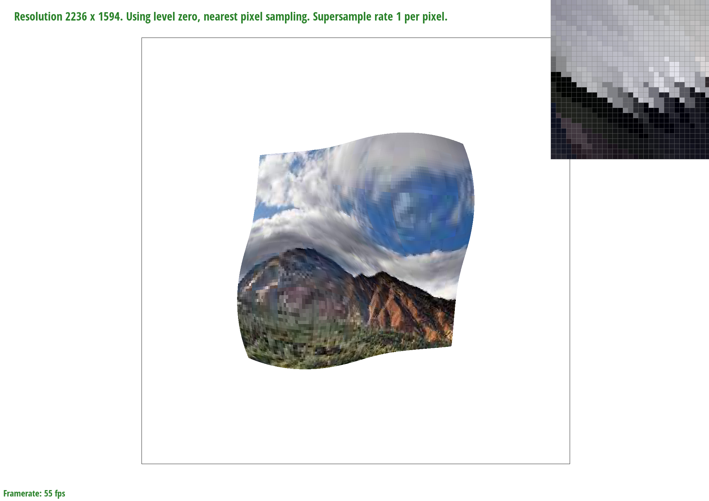 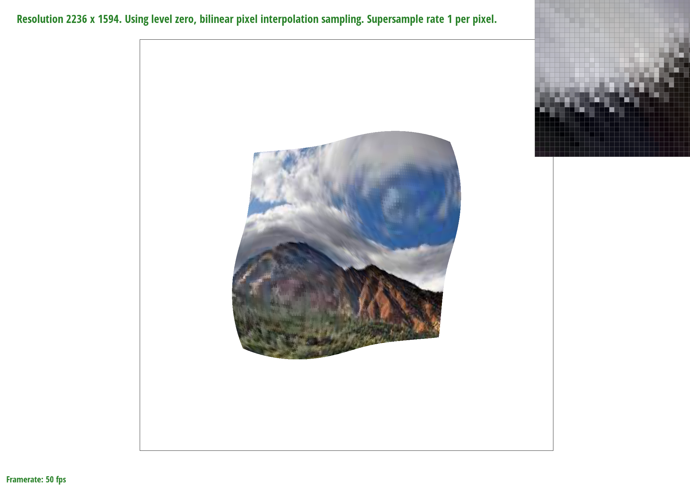 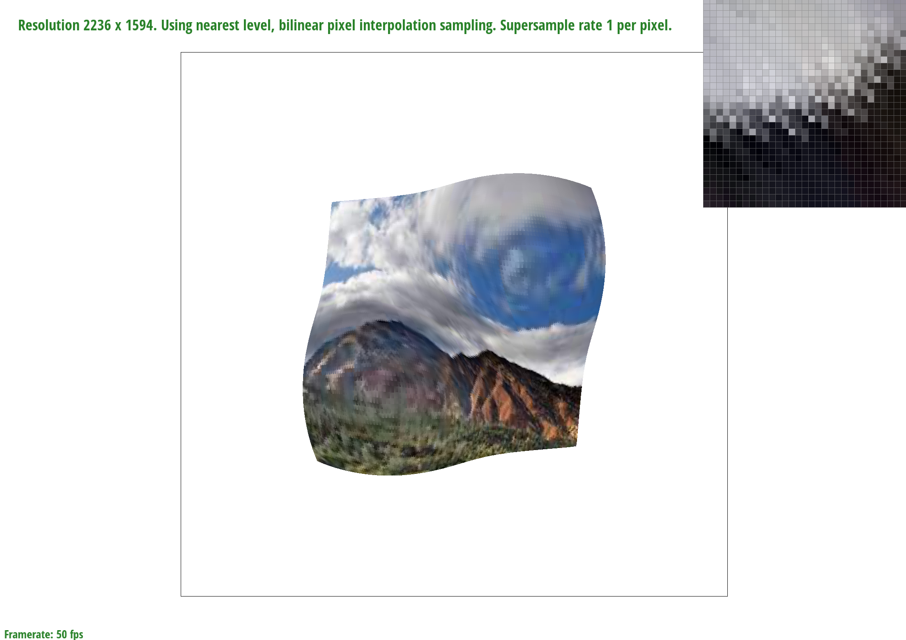
PROJECT WEBPAGE: https://cal-cs184-student.github.io/project-webpages-sp23-pcg108/proj1/index.html